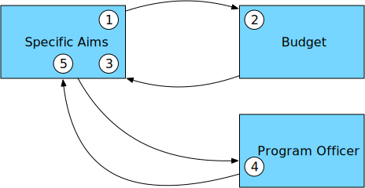

Writing an NIH Grant in 9 “easy” steps
Step 3: Getting started (PO, aims, budget)
Homework updates and questions
Getting started
The foundation of your grant is the aims and budget. And your program officer, who can guide you. These three topics are where we start.

Specific aims
- Just like a good abstract, convey:
- What is the state of knowledge?
- What is the gap/problem?
- How does this proposal help?
- Why should we care? (Hint: “because it’s interesting” doesn’t count)
- Remember your audience!
Five rules for specific aims
You will have 3 specific aims. The number of the aims will be three. You will not have two aims, nor four aims.
Tell the reviewers what the goal is. (E.g. a sentence, in bold, that begins: “The goal of this project is…”)
Pretend your reader is not an expert in your field, is tired, overworked, and under a strict deadline. Now get them excited in the first paragraph.
Don’t use jargon. You are allowed one mayyyyybe two acronyms for your entire grant (according to me); don’t squander them.
Avoid references in your aims.
Specific aims example
- From a grant that happened to get funded (R01 DC019507)
- Intended audience: AUD study section (people who are familiar with hearing and cochlear implants, not so much vrain imaging)
- Not perfect (!)
- (Feel free to discuss any other aims instead)
Understanding speech is an active process. Our ability to make sense of a noisy world requires both an intact auditory system, and the flexible engagement of executive resources. Although in many cases a cochlear implant (CI) can restore hearing to a deaf individual, many CI users experience suboptimal outcomes. Perhaps our best chance of optimizing CI outcomes is by investigating the major sources of variance predictive of long-term success. This project will determine how individual differences in functional brain reorganization and cognitive abilities support successful speech understanding in CI users.
Listeners with CIs are a critical group in which to investigate cognitive processing during speech understanding. Individual differences in performance post-implantation remain challenging to explain: quantitative indices of cognitive load, as we propose here, have the potential to provide additional explanatory power. From a basic science standpoint, listeners with CIs provide an unprecedented opportunity to study neuroplasticity in the human auditory system. Both of these perspectives stand to benefit heavily from functional brain imaging. Unfortunately, there is a paucity of data on localized brain activity in listeners with CIs, as CI hardware is generally not compatible with MRI and causes problematic artifact in EEG and MEG. Here we propose to use state-of-the-art optical imaging methods to circumvent these limitations. We will use recently developed high-density diffuse optical tomography (HD-DOT) performed with custom-built equipment. HD-DOT will allow us to answer fundamental questions about the neurobiology of speech comprehension in listeners with CIs previously impossible to address. We will pursue three aims:
Aim 1: Elucidate the relationship between individual differences in brain activity and clinical outcome measures in adult CI recipients. Substantial differences exist in how well CI recipients are able to understand auditory-only speech. We will measure the brain networks engaged in understanding auditory-only speech in a cohort of adult CI recipients to characterize the individual variability in brain networks supporting successful understanding. We hypothesize that, as a group, listeners with CIs will recruit regions of dorsolateral prefrontal cortex (DLPFC) more than listeners with normal hearing, and that functional connectivity between DLPFC and regions superior temporal cortex will be most related to individual differences in speech recognition accuracy. These methods will generate a compelling amount of data per subject and built-in metrics of within-subject reproducibility to ensure accurate and unbiased estimates of single-subject brain activity.
Aim 2: Establish the degree to which visual speech information alters brain activity during speech comprehension. Although auditory-only speech plays a role in everyday experience (e.g., phone calls), a great deal of communication takes place in the context of face-to-face conversation. We will contrast patterns of brain activation for auditory-only vs. audiovisual speech in the context of a movie, emphasizing ecological validity by approximating real-world communicative scenarios (i.e., connected speech and rich visual scenes). We predict that 1) multimodal cues provided by audiovisual speech will reduce cognitive demands resulting in downregulation of DLPFC, and 2) individual differences in functional connectivity between visual, auditory, and prefrontal cortex will account for discrepancies in auditory only vs. audiovisual speech performance.
Aim 3: Longitudinal evaluation of speech perception in newly-implanted CI listeners. The time course of speech intelligibility following CI activation in adults shows considerable variability across listeners. In Aim 3 we will collect behavioral and neuroimaging measures of speech perception on CI listeners before implantation and at regular intervals following CI activation (up to 12 months). We hypothesize that improved speech intelligibility will be associated with increased task-based functional connectivity between DLPFC and temporal lobe regions important for speech processing. We also use the data in exploratory analyses in which we will link pre-surgical imaging to post-surgical outcomes to improve the accuracy of outcome success. In particular, whether resting state network organization pre-surgery reflects a predisposition to post-surgical reorganization.
Overall impact: The proposed studies speak to a broad question of how auditory and cognitive factors interact during speech perception, which has particular relevance for the 36 million Americans who have hearing impairment. Our work will advance an personalized approach to CI outcome management based on individual clinical and cognitive factors. Our research team is uniquely poised to carry out this research, bringing a strong complement of interdisciplinary expertise in clinical application, cognitive neuroscience, and optical brain imaging. Our studies are novel but have strong theoretical grounding and rely on solid preliminary data.
Budget
- Mechanism determines maximum budget
- There may be different requirements depending on amount (e.g., modular vs. detailed for an R01)
- Usually limits are listed on direct costs (the money you use for research), not including indirect costs (what the university gets to pay for space, electricity, etc.)
Indirect costs are negotiated between every institution and the NIH. The current Northeastern rate is 59.5%. That means if you have $100k in direct costs, NIH pays Northeastern $159,500 ($59,500 of which goes to someone other than you).
Budget: getting started
- Personnel tend to be the biggest item; start here
- If a TBN, identify a starting salary or someone with an equivalent position. When in doubt, guess high.
- Fringe/benefits need consideration
- Yearly increases? Make sure to follow institutional/NIH policy
- Send your grant admin a list of personnel and effort and see where you are at
- If feeling brave, add a few other categories you know you will need - particularly any large items (e.g., equipment)
Personnel: PI
- Protect your (PI) time and salary
- Effort should broadly seem reasonable for what you propose
- If you have no other grants, it makes sense to have significant effort on an R01
- Conversely, if you have 6 grants, it will not seem believable or sensible for you to have a lot of effort on a new grant (unless a bunch are ending)
- If you get an award, can adjust effort of key personnel up to 25% without writing a justification
- 4 months of budgeted effort gives you flexibility from 3-5 months
Personnel: Key personnel
Key personnel are not only important (“key”) to the project, but have other requirements:
- Can’t adjust effort more than 25% without justification/approval
- Provide a biosketch
Most co-investigators will be key personnel.
Personnel: Key personnel
- It is unusual to see grant with PI as only key personnel
- As a junior person, having a senior person as a co-investigator and key personnel can be useful
- Reviewers will use their effort, in part, to gauge that person’s commitment to the project
- Senior people tend to be expensive
- 1 month is fine, 0.5 months also common
- Reviewers will use their effort, in part, to gauge that person’s commitment to the project
- One reason to get the budget roughly sorted early is that effort discussions with co-investigators should happen transparently and early on
Personnel: TBNs
If you don’t already know a specific person, assume:
- They will take longer to hire than you expect
- They will be less productive than you expect
These problems are exacerbated if you have under-budgeted.
Budget minutiae: Don’t forget!
- Publication costs (year 3 onward)
- Parking for participants
- Costs related to data sharing or curating (e.g., personnel costs)
- Travel (e.g., conferences)
- Consultants? (Can be useful to shore up real or perceived weaknesses in team, e.g. statistics)
- Computers, replacement(s) in Year 4
Misc. budget thoughts
- Many (but not all) institutes have a flat budget cut (e.g., 15%) for all awards. Plan accordingly.
- There are no prizes for being frugal, but reviewers get grumpy if your budget seems padded.
Program officers
- Each institute has program officers (POs) who help implement the priorities of the institute
- Often former researchers
- Have specific topics they cover
- How do you identify “your” PO?
- After submission: assigned (out of your control)
- Before submission: guess, Matchmaker, ask
What your PO can help with
- Reading your aims and giving you advice about fit of your research for IC and mechanism
- Give advice on study section selection
- Discretion for funding in certain situations (e.g., NOSI, ECR)
What your PO can help with
- Help interpret study section comments (sometimes)
- PO is not involved in review but may be in the room
- If they were not in the room, they can guess at some stuff but in my experience are no more helpful than an experienced colleague
- If they were in the room, they may remember things not captured in the comments
What your PO cannot help with
- Handling specific reviewer comments (they can offer advice but have no special knowledge or power)
When to contact your PO
- Stock advice: Contact them early in the process, once you have aims (they will almost certainly request aims)
- Especially if unsure of mechanism, eligibility, etc.
- Once your questions are answered, contact after you get study section comments back
- I have had a PO skim comments with me, which was not helpful
- I have also had a PO help me get an R56 when my R01 A1 was 20th percentile (even though she never responded to my initial email)
- YMMV, TEWABGOS
Questions?
Homework
- Draft a budget justification
- Draft specific aims
- Identify your likely program officer
Next time
- Specific aims workshop
- Bring two printed copies if your aims (even if not “done”) for swapping